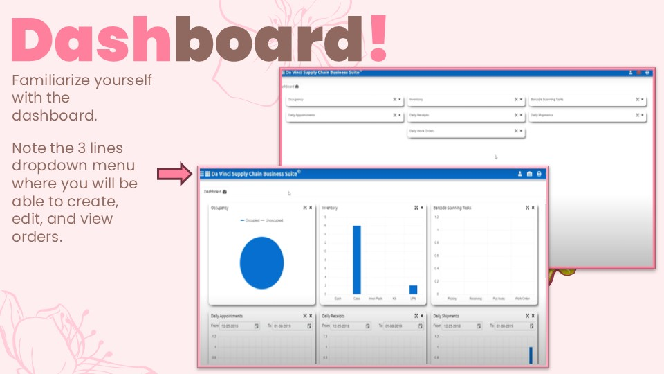

To begin using DaVinci WMS:
After logging in, you’ll land on the DaVinci dashboard. This dashboard gives you a quick overview of key operational metrics, such as:
Take a moment to familiarize yourself with the layout. It’s designed to help you quickly monitor warehouse status.
In the top-left corner, you’ll see the three-line menu icon (also known as the “hamburger menu”). This dropdown is essential for moving around the system.
From here, you can:
Get familiar with this menu — you’ll use it constantly while working in DaVinci WMS.